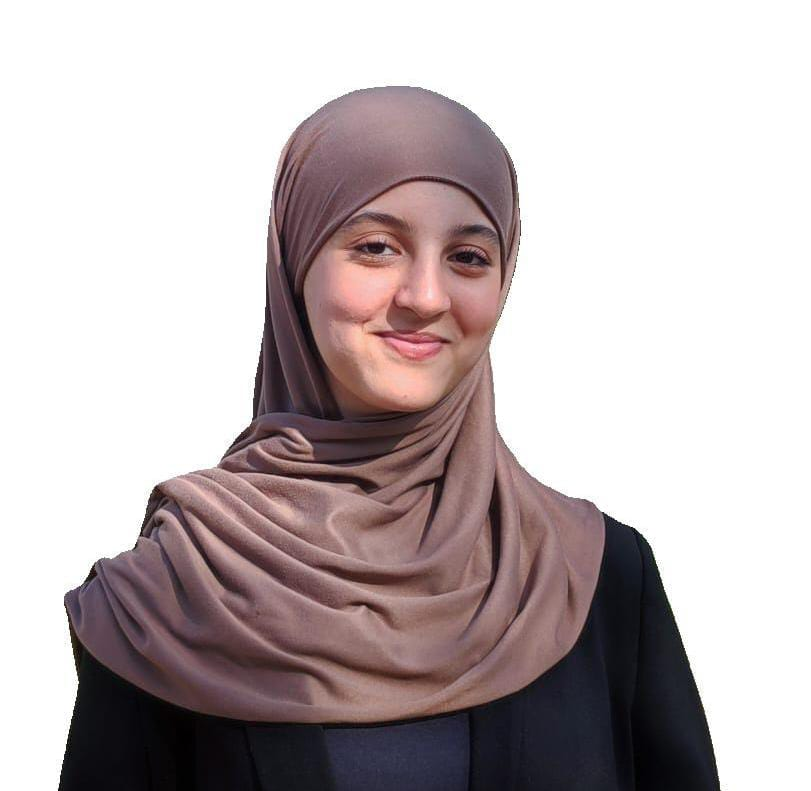

End-of-studies internship
ESTC · Casablanca · Apr – Jun
- Deployed Nextcloud on a high-availability Proxmox cluster in a real environment, building on the project’s design.
- Set up remote access to machines with Guacamole.
- Proxmox
- Nextcloud
- Guacamole

I'm a first-year Master's student, and I'm still learning cybersecurity. I'm curious about how systems work, how they can be attacked, and how to protect them.
I enjoy building things and testing what I learn: this portfolio is part of that, and I keep adding to it as I progress.
ENSIAS, Rabat
Faculty of Sciences, Kenitra
Higher School of Technologie (EST), Casablanca
ESTC · Casablanca · Apr – Jun
ESTC · Casablanca · Apr
Webkaram · Tangier · Jul
Lab on an isolated network with Kali Linux as the attacker and a Windows 8.1 client as the victim. I poisoned the victim’s ARP table with Ettercap to sit between it and the gateway, then captured and analysed the traffic with tcpdump.
Full pentest of a deliberately vulnerable machine from Kali Linux, following the classic methodology. I exploited the backdoor in vsftpd 2.3.4 with Metasploit and obtained a remote root shell.
Installed and configured Apache2 on Debian (VirtualBox) and hosted several sites on one server using the three virtual hosting methods, tested from Debian, Windows and Kali clients.
Open to internships and projects in cybersecurity, cloud and network. Send me a message and I’ll reply quickly.